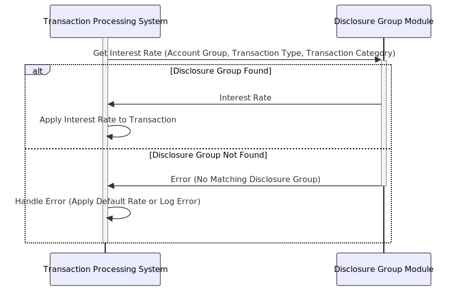

Gerado em: 1º de outubro de 2024
Título do Documento: CardDemo - Especificação da Estrutura do Grupo de Divulgação
Descrição Resumida:
Este documento descreve a estrutura do “Grupo de Divulgação” dentro do aplicativo CardDemo. Essa estrutura é usada para determinar a taxa de juros aplicada às transações com cartão de crédito com base no tipo de conta, tipo de transação e categoria da transação.
Histórias do Usuário:
Como analista financeiro, preciso garantir que o sistema aplique as taxas de juros corretas aos diferentes tipos de transações com cartão de crédito para que possamos calcular com precisão a receita de juros e as declarações do cliente.
Épico Relacionado:
3 - Gestão de Cartão de Crédito
Requisitos Funcionais:
- Definir Grupo de Divulgação: O sistema deve permitir a definição de um Grupo de Divulgação com uma combinação exclusiva de Grupo de Conta, Tipo de Transação e Categoria de Transação.
- Atribuir Taxa de Juros: Cada Grupo de Divulgação deve ter uma taxa de juros associada.
- Recuperar Taxa de Juros: O sistema deve ser capaz de recuperar a taxa de juros correta para uma transação com base em seu Grupo de Divulgação associado.
Regras de Negócio:
- Grupo de Divulgação Exclusivo: O sistema deve garantir que cada combinação de Grupo de Conta, Tipo de Transação e Categoria de Transação seja exclusiva dentro da estrutura do Grupo de Divulgação.
- Taxa de Juros Válida: O sistema deve validar se a taxa de juros atribuída a um Grupo de Divulgação é um valor numérico válido e está dentro de um intervalo aceitável predefinido.
- Determinação da Taxa de Juros da Transação:
- Quando uma transação ocorre, o sistema deve determinar a taxa de juros aplicável combinando o Grupo de Conta, o Tipo de Transação e a Categoria de Transação da transação com o Grupo de Divulgação correspondente.
- Se um Grupo de Divulgação correspondente for encontrado, o sistema aplica a taxa de juros associada à transação.
- Se nenhum Grupo de Divulgação correspondente for encontrado, o sistema deve aplicar uma taxa de juros padrão ou acionar uma condição de erro, dependendo da regra de negócio.
Requisitos Não Funcionais:
- Desempenho: A recuperação da taxa de juros com base no Grupo de Divulgação deve ser rápida e eficiente para evitar impacto nos tempos de processamento de transações.
- Manutenibilidade: A estrutura deve ser facilmente manutenível, permitindo a adição, modificação ou exclusão de Grupos de Divulgação e suas taxas de juros associadas.
- Auditabilidade: Todas as alterações na estrutura do Grupo de Divulgação, incluindo a criação, modificação e exclusão de grupos e taxas de juros, devem ser registradas para fins de auditoria.
Critérios de Aceitação:
- O sistema define e armazena com sucesso Grupos de Divulgação com combinações exclusivas de Grupo de Conta, Tipo de Transação e Categoria de Transação.
- O sistema recupera corretamente a taxa de juros atribuída para um determinado Grupo de Divulgação.
- O sistema aplica a taxa de juros correta às transações com base em seu Grupo de Divulgação associado.
- Todas as alterações feitas nos Grupos de Divulgação são registradas e auditáveis.
Melhorias de Código:
- Tratamento de Erros: Implemente um tratamento de erros robusto para cenários como entradas de taxa de juros inválidas e tentativas de criar Grupos de Divulgação duplicados.
- Validação de Dados: Adicione verificações de validação de dados para garantir a integridade dos dados armazenados na estrutura do Grupo de Divulgação, como validar o formato dos códigos de Grupo de Conta, Tipo de Transação e Categoria de Transação.
- Comentários de Código: Adicione comentários claros e concisos ao código para melhorar a legibilidade e a compreensão da estrutura do Grupo de Divulgação e seu uso.
Melhorias de Segurança:
- Controle de Acesso: Implemente medidas adequadas de controle de acesso para restringir a modificação de Grupos de Divulgação e taxas de juros apenas ao pessoal autorizado.
- Criptografia de Dados: Considere criptografar dados confidenciais dentro da estrutura do Grupo de Divulgação, particularmente as taxas de juros, para proteger contra acesso não autorizado.
Diagrama Conceitual:

–Made by “Smart Engineering” (by Compass.UOL)–